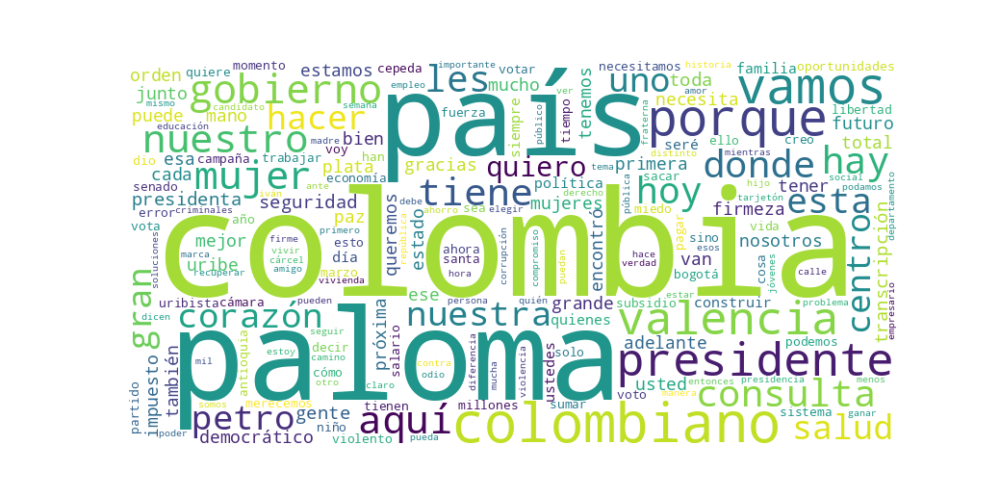

Seguidores: 552,014
1. Perfil de Comunicación La comunicación de Paloma Valencia combina un estilo directo, combativo y cercano, con momentos de tono emotivo y personal. Utiliza un lenguaje predominantemente popular, accesible, con frases cortas, repeticiones y un uso frecuente de refranes colombianos (ej. "A ese cuento le falta un pedazo", "nos endulzaron el oído... ya estábamos en plena tusa"). Su discurso es informal, se dirige al ciudadano común ("colombiano", "vecino", "mamá luchadora") y busca generar identificación. Aunque en ocasiones recurre a cifras y términos políticos (ej. "regla fiscal", "PIB"), predomina la simplicidad retórica. Es una comunicación de cercanía, que enfatiza su rol como madre ("Amapola"), su firmeza ("mano de hierro") y su herencia política ("soy Paloma, la de siempre").
2. Temas Principales 1. Seguridad: Es el eje central. Aborda el tema con un marco de "Paz Total vs. Seguridad Total", criticando la política del gobierno actual como una concesión a los violentos. Propone mano firme: "militarizar" vías, "extraditar bandidos", "reactivar órdenes de captura" y declarar una "ofensiva contra extorsionistas". Ejemplo: "En mi gobierno mandará la ley, no los criminales." 2. Economía y Estado: Promueve la "economía fraterna" frente al "odio de clases". Propone reducir drásticamente el tamaño del Estado ("un Estado ligero"), bajar impuestos, apoyar a emprendedores e informales con crédito, y defender la iniciativa privada. Critica el "estatismo" y el gasto burocrático. Ejemplo: "Menos impuestos y más salarios para los trabajadores. Menos gasto en burocracia para poder hacer más bienes públicos." 3. Salud: Ataca la gestión del gobierno actual, acusándola de destruir el sistema y causar muertes por negligencia. Propone un plan de choque: pagar deudas al sistema, garantizar medicamentos y desatrabar tratamientos. Ejemplo: "La salud se deteriora porque le quitaron la plata... vamos a garantizar medicamentos, más atención." 4. Liderazgo Femenino y Valores: Se presenta como la "primera mujer presidenta", un hito histórico. Enlaza este rol con valores de familia, firmeza, honestidad ("manos limpias") y defensa de la fe. Apela a las mujeres y a los "creyentes". Ejemplo: "Es tiempo de una mujer presidenta... con manos limpias e incorruptibles, y con el corazón grande." 5. Unidad Nacional vs. Polarización: Aunque su discurso es profundamente anti-petrista, construye un marco de "sumar entre distintos". Invita a "petristas arrepentidos" y a todos los colombianos a unirse bajo su propuesta, definiendo la elección no como izquierda vs. derecha, sino como "libertad vs. autocracia" o "estatismo vs. libertad". Ejemplo: "Colombia no está escogiendo entre izquierda o derecha... es entre libertad y autocracia."
3. Tono y Sentimiento Dominante El tono es predominantemente confrontacional y crítico hacia el gobierno de Gustavo Petro y su candidato heredero, Iván Cepeda, a quienes acusa de complicidad con la violencia, corrupción y destrucción institucional. Sin embargo, este tono se equilibra con una narrativa esperanzadora y propositiva hacia el futuro que ella ofrece: un país seguro, próspero y unido ("Lo mejor está por venir"). Hay un marcado sentimiento de urgencia y alerta ("Colombia está en riesgo") mezclado con orgullo patrio y fe religiosa.
4. Palabras Clave de Poder * Orden, Firmeza y Corazón: Su eslogan trinitario que resume su propuesta de gobierno. * Seguridad Total: Contraposición directa a la "Paz Total". * Economía Fraterna: Su modelo económico opuesto al "odio de clases". * Manos Limpias: Símbolo de su honestidad frente a la corrupción que atribuye al gobierno. * Colombia Merece Más / Lo Mejor Está Por Venir: Frases esperanzadoras de cierre. * Primera Mujer Presidenta: Su marca histórica y de género. * Sumar / Una Colombia Más Grande: Llamado a la unidad por encima de las diferencias. * Uribista (y "triplemente uribista"): Afirmación de su identidad política y legado.
5. Conclusión Estratégica La estrategia de comunicación de Paloma Valencia es dual: movilizar la base uribista tradicional con un discurso de seguridad, mano dura y defensa del legado de Álvaro Uribe, mientras busca ampliar su audiencia apelando al descontento con el gobierno actual entre sectores moderados, independientes y "petristas arrepentidos". Su marco narrativo redefine la contienda electoral, evitando la etiqueta de "derecha" para presentarse como la opción de "libertad, orden y unidad" frente a lo que describe como "autocracia, caos y división". Busca evocar, en su electorado base, convicción y combate; y en el electorado ampliado, esperanza y reconciliación nacional. Es una comunicación que oscila entre el ataque frontal al adversario y la construcción de una imagen maternal, firme y conciliadora, apuntando a capitalizar tanto el rechazo al gobierno saliente como el anhelo de un cambio restaurador.
Fecha: 18 de octubre de 2023 Estratega: Asesor de Comunicación de Élite Objeto: Análisis del "corpus del éxito" - 10 videos más exitosos en Instagram.
El contenido más exitoso de Paloma Valencia se basa en una fórmula de confrontación emocionalmente cargada. Combina una crítica frontal y específica al gobierno del presidente Gustavo Petro con una narrativa de "orden versus caos", posicionándose como la defensora intransigente de la legalidad, la seguridad y la decencia pública. El éxito no radica en la exposición de propuestas programáticas detalladas, sino en la capacidad de articular un relato de resistencia y restauración, donde cada ataque al gobierno se enmarca como una victoria moral para "los colombianos de bien". La emoción dominante es una mezcla de indignación canalizada y esperanza de cambio, siempre bajo el lema "Orden, Firmeza y Corazón".
Contraste y Confrontación Binaria: Es la táctica fundamental. Define claramente un "nosotros" (el uribismo, la legalidad, las víctimas, la gente de bien) frente a un "ellos" (el gobierno de Petro, asociado al caos, la ilegalidad, la politiquería y la alianza con ilegales). Cada video plantea una batalla concreta (judicial, de salud, de seguridad) donde ella lidera la oposición. Ejemplo: "Le volvimos a ganar a Petro... Se acabó la politiquería y la imposición".
Apelación a la Víctima y al Ciudadano Común: Conecta los fallos del gobierno con casos específicos y emotivos (Kevin Arley, el niño con hemofilia; las familias de los escoltas asesinados; los damnificados de Córdoba). Esto transforma la crítica política en una defensa personal y humanizada, generando indignación empática. La táctica es: identificar una falla sistémica + ilustrarla con un caso concreto con nombre y apellido.
Narrativa de Resiliencia y Legitimidad Uribista: Se presenta no como una política convencional, sino como la guardiana leal de un legado y una comunidad política (el uribismo) en resistencia. Relata su trayectoria como una épica de supervivencia ("el arbolito sin una sola hoja") que ahora florece. Esto fortalece su credibilidad ante su base y la proyecta como una candidata de convicción, no de oportunismo.
Deslegitimación por Asociación y Denuncia de Corrupción: Constantemente vincula al gobierno oponente con la delincuencia y la ilegalidad. Utiliza denuncias mediáticas (Pipe Tuluá, Papá Pitufo) para construir un relato donde la "Paz Total" es una fachada para la impunidad y donde la financiación de su rival proviene del crimen. Esto eleva el tono de la crítica de lo político a lo ético-penal.
Los temas que generan mayor "engagement" son aquellos donde puede ejemplificar el "fracaso" o la "ilegitimidad" del gobierno de Petro de manera concreta: 1. Seguridad y Orden Público: Atentados, narcoterrorismo, entrega del territorio a grupos ilegales. 2. Salud: Crisis hospitalaria, historias clínicas vulneradas, desfinanciación. 3. Corrupción y Cacicazgo Político: Compra de votos, imposición de cargos (como el rector de la Nacional), financiación ilegal de campañas. 4. Gestión de Crisis y Desastres: Inundaciones en Córdoba, desastres ambientales, mostrando inacción o búsqueda de chivos expiatorios por parte del gobierno.
El lenguaje, el tono y los temas apuntan directamente a su base política consolidada y a los votantes desencantados con el gobierno actual. No busca seducir a indecisos con discursos neutros, sino activar y movilizar a un electorado que comparte su diagnóstico de crisis y su admiración por el uribismo. Les habla como a combatientes en una batalla cultural y política, usando un lenguaje directo, a veces coloquial ("nosotros no somos brutos"), y reafirmando sus creencias. La audiencia implícita es aquella que ya simpatiza con la derecha colombiana y necesita refuerzo, motivación y un sentido de comunidad y victoria.
La clave fundamental del poder de su discurso es su capacidad para personalizar y emocionalizar la confrontación política. No habla de "la oposición", habla de "Paloma Valencia vs. Gustavo Petro" en cada tema. Transforma debates complejos (pensiones, energía, salud) en anécdotas dramáticas de lucha entre el bien y el mal. Lo que la diferencia del discurso político tradicional es su tono de combate sin ambages, su enfoque en narrativas de resistencia y restauración moral, y su habilidad para usar las redes sociales no para informar, sino para movilizar emocionalmente a una tribu política. Su poder reside en ser la vocera más enérgica y nítida del descontento, ofreciendo no un programa de gobierno, sino una identidad y una causa a sus seguidores.

Caption: Con Orden que devuelva la confianza, Firmeza que enfrente los retos y Corazón que una a los colombianos, vamos a construir el país que merecemos. Lo mejor está por venir. #PalomaPresidente
Likes: 2,427 | Comentarios: 70 | Reproducciones: 12,620
Ver en InstagramCaption: La crisis de la salud no da espera: sin medicamentos, hospitales colapsados y personal sin pago bajo el gobierno de Petro. Vamos a garantizar medicamentos, más atención y poner al día cirugías y tratamientos.
Likes: 3,639 | Comentarios: 99 | Reproducciones: 22,721
Ver en InstagramCaption: Le volvimos a ganar a Petro gracias a la justicia: Ismael Peña es el legítimo rector de la Universidad Nacional. Se respetaron los procedimientos y se impuso la legalidad. Se acabó la politiquería y la imposición del Gobierno en la mejor universidad de Colombia. #OrdenFirmezaYCorazón 🇨🇴
Likes: 4,841 | Comentarios: 195 | Reproducciones: 31,167
Ver en Instagram